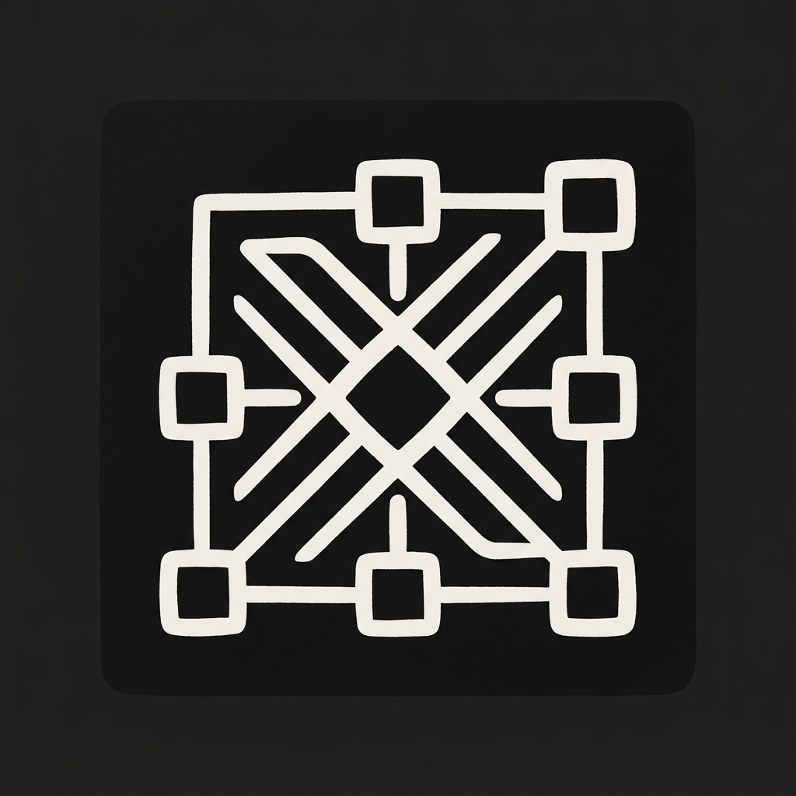

COREXCentralized Organized Reasoning & Extraction Matrix
A language model built to converge before it answers. It takes messy, scattered, or contradictory input, reasons through it in one pass, and hands back a structured result — not a paragraph you have to pick apart yourself.
It sits behind a small API. Send a request, get a structured, verified answer back.
$ curl https://api.corex.ai/v1/reason \
-H "Authorization: Bearer $COREX_KEY" \
-d '{"input": "summarize section 4.2 and flag risk terms"}'
→ 200 OK
{
"answer": "...",
"confidence": 0.94,
"source": "contract.pdf#p4"
}
Early access is rolling out to a handful of teams first. Email access@corex.ai to get on the list.